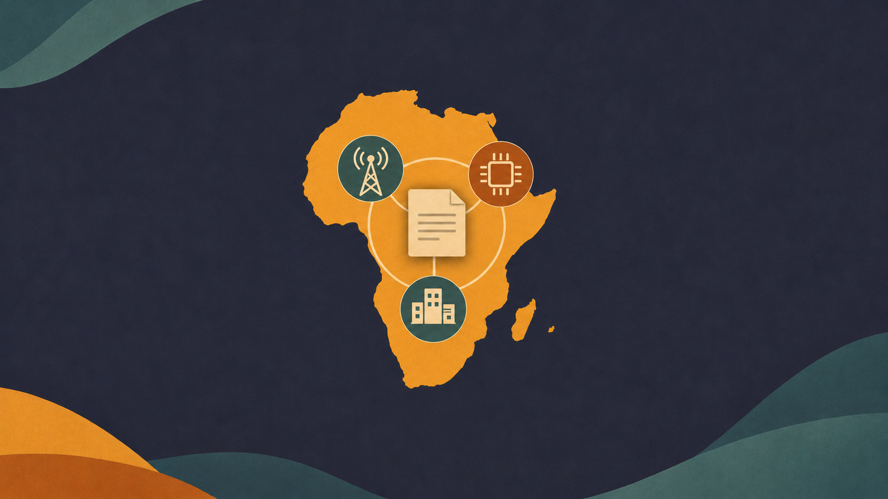

Indian Ocean · technology · 17 November 2026
Mauritius Telecom and Cassava sign AI partnership MoU.
The companies say they will explore AI infrastructure, models and education services linking Mauritius with wider African markets.

What We Know
Mauritius Telecom said the companies signed the MoU on 17 November during Africa Tech Festival 2026. The announcement describes exploration of access to Cassava’s AI Factory in Cape Town and AI models through CAIMEx, with possible links to the myt AI Cloud platform. It also describes an education track involving myt learn.
Why It Matters
The agreement places a Mauritius-based telecom operator inside a regional debate over African AI infrastructure, local relevance and who controls access to advanced compute.
What We’re Watching
- Whether the MoU becomes a binding commercial agreement.
- Any confirmed integration, customer access or pricing.
- Measurable rollout of the education platform.